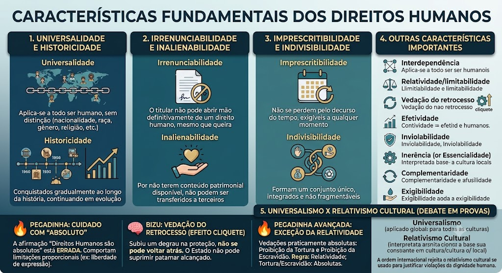

📘 Características dos Direitos Humanos
A partir daqui estudamos as características (atributos essenciais) dos Direitos Humanos — universalidade, historicidade, irrenunciabilidade, inalienabilidade, imprescritibilidade, indivisibilidade e os desdobramentos teóricos sobre relatividade, vedação do retrocesso, universalismo e relativismo cultural.
Universalidade
Universalidade
Aplicam-se a todo ser humano, sem distinção de nacionalidade, raça, gênero, religião ou qualquer outra condição.
Historicidade
Historicidade
Não nasceram prontos: foram conquistados gradualmente ao longo da história, e continuam evoluindo (daí a ideia de \"gerações\" ou \"dimensões\").
Irrenunciabilidade
Irrenunciabilidade
O titular não pode abrir mão definitivamente de um direito humano, ainda que queira — por exemplo, ninguém pode validamente \"vender\" sua própria liberdade.
Inalienabilidade
Inalienabilidade
Por não terem conteúdo patrimonial disponível, os Direitos Humanos não podem ser transferidos a terceiros.
Imprescritibilidade
Imprescritibilidade
Não se perdem pelo decurso do tempo — o titular pode exigir sua proteção a qualquer momento.
Indivisibilidade
Indivisibilidade
Direitos civis, políticos, econômicos, sociais e culturais formam um conjunto único: não é possível garantir uns e ignorar outros.
Cuidado com \"absoluto\"
Cuidado com \"absoluto\"
É comum a banca afirmar que \"os Direitos Humanos são absolutos e não comportam qualquer limitação\". Essa afirmação está errada: mesmo direitos centrais, como a liberdade de expressão, podem sofrer restrições proporcionais para proteger outros direitos.
Vedação do Retrocesso (Efeito Cliquete)
Vedação do Retrocesso (Efeito Cliquete)
A metáfora do Efeito Cliquete (effet de cliquet), muito cobrada em provas, ilustra a vedação do retrocesso: uma vez subido um degrau na proteção de um direito humano, não se pode voltar atrás. O Estado não pode reduzir ou suprimir o patamar de proteção já alcançado.
⚠️ A Exceção da Relatividade (Pegadinha Avançada!)
⚠️ A Exceção da Relatividade (Pegadinha Avançada!)
Embora a regra seja a relatividade (nenhum direito é absoluto), a doutrina e a jurisprudência majoritárias apontam duas vedações praticamente absolutas: a proibição da tortura e tratamentos desumanos e a proibição da escravidão e trabalho escravo. Atenção em prova: se a questão afirmar 'os Direitos Humanos são relativos' -> certo; se perguntar se a proibição da tortura pode ser relativizada -> errado.
Universalismo
Universalismo
Os Direitos Humanos aplicam-se a todos, em qualquer lugar do mundo, independentemente da cultura local.
Relativismo Cultural
Relativismo Cultural
Defende que os direitos devem ser interpretados conforme a cultura, tradição e costumes de cada sociedade.
Conceito e plano de eficácia
Conceito e plano de eficácia
Embora muitas vezes sejam usados como sinônimos na prática, as bancas cobram a diferença técnica:
Direitos Humanos — são aqueles consagrados no direito internacional (tratados, convenções, resoluções da ONU). Têm aplicação no plano internacional.
Direitos Fundamentais — são aqueles positivados no direito interno (inseridos no texto de uma Constituição rígida, como a CF/88). Têm aplicação no plano constitucional interno.
Essa distinção de plano de eficácia (internacional vs. constitucional) é fundamental para questões de prova.
Mapa-mental
- Universalidade
Aplicam-se a todo ser humano, sem distinção de nacionalidade, raça, gênero, religião ou qualquer outra condição.
- Historicidade
Foram conquistados gradualmente ao longo da história e continuam evoluindo.
- Irrenunciabilidade
O titular não pode abrir mão definitivamente de um direito humano.
- Inalienabilidade
Não podem ser transferidos a terceiros.
- Imprescritibilidade
Não se perdem pelo decurso do tempo.
- Indivisibilidade
Direitos civis, políticos, econômicos, sociais e culturais formam um conjunto único.
- Relatividade
A regra é que os Direitos Humanos não são absolutos e podem sofrer limitações proporcionais.
- Vedação do Retrocesso
Efeito Cliquete: uma vez alcançado determinado nível de proteção, o Estado não deve reduzir esse patamar.
📗 Classificação dos Direitos Humanos
A partir daqui estudamos a classificação dos Direitos Humanos — direitos civis e políticos, DESC, difusos e coletivos, além dos marcos históricos (Petição de Direito, Bill of Rights, Declarações de 1776 e 1789), das gerações/dimensões (4ª, 5ª e 6ª) e do sistema internacional de proteção (Carta Internacional, ONU, Controle de Convencionalidade).
Direitos civis e políticos
Direitos civis e políticos
Ligados à liberdade individual e à participação política: vida, liberdade, igualdade formal, voto, liberdade de expressão.
Direitos econômicos, sociais e culturais (DESC)
Direitos econômicos, sociais e culturais (DESC)
Exigem, em regra, prestações positivas do Estado: educação, saúde, moradia, trabalho, previdência.
Direitos difusos e coletivos
Direitos difusos e coletivos
Pertencem a grupos ou à coletividade como um todo, sem titular individualizado: meio ambiente equilibrado, paz, patrimônio comum da humanidade.
Não é uma regra absoluta
Não é uma regra absoluta
A doutrina contemporânea rejeita a ideia de que direitos sociais nunca seriam exigíveis de imediato. Há um núcleo mínimo — o mínimo existencial — que pode ser exigido judicialmente mesmo sem lei regulamentadora.
Petição de Direito (1628) e Habeas Corpus Act (1679)
Petição de Direito (1628) e Habeas Corpus Act (1679)
Consolidação dos direitos civis na Inglaterra, antecedendo a Revolução Gloriosa.
Bill of Rights (1689)
Bill of Rights (1689)
Marco da transição do absolutismo para a monarquia constitucional na Inglaterra.
Declaração de Direitos da Virgínia (1776) e Declaração de Independência dos EUA (1776)
Declaração de Direitos da Virgínia (1776) e Declaração de Independência dos EUA (1776)
Primeiro documento constitucional a declarar formalmente os direitos inalienáveis dos indivíduos, antes da Revolução Francesa.
Declaração dos Direitos do Homem e do Cidadão (1789)
Declaração dos Direitos do Homem e do Cidadão (1789)
Marco supremo do liberalismo e da 1ª Dimensão/Geração na França.
4ª Geração (Bobbio)
4ª Geração (Bobbio)
Ligada à engenharia genética, biotecnologia e bioética — manipulação do DNA, clonagem, pesquisas com células-tronco.
5ª Geração (Bobbio)
5ª Geração (Bobbio)
Direito à paz, entendido como sobrevivência da humanidade diante dos avanços tecnológicos e riscos globais.
6ª Geração (Uadi Lammêgo Bulos)
6ª Geração (Uadi Lammêgo Bulos)
Alguns doutrinadores atribuem a 6ª dimensão ao direito à água potável, tema em alta na jurisprudência recente.
Mnemônico
Mnemônico
📌 Negativo = abstenção (1ª) | Positivo = prestação (2ª) | Ativo = participação (voto, 1ª política) | Passivo = deveres (transversal)
Carta Internacional dos Direitos Humanos
Carta Internacional dos Direitos Humanos
A junção da DUDH (1948) + PIDCP (1966) + PIDESC (1966) forma o bloco conhecido como Carta Internacional dos Direitos Humanos. A Carta das Nações Unidas (1945) é o documento fundador que inaugura o Sistema Global de Proteção dos Direitos Humanos.
Estrutura em dois pilares da ONU
Estrutura em dois pilares da ONU
O Sistema Global de Proteção dos Direitos Humanos da ONU é dividido em dois grandes pilares:
1. Órgãos Principais (baseados na Carta da ONU):
- Conselho de Direitos Humanos da ONU — órgão político-consultivo da ONU, substituiu a Comissão de Direitos Humanos em 2006. Ele conduz a Revisão Periódica Universal (RPU), que avalia o cumprimento dos compromissos de direitos humanos por todos os Estados-membros da ONU a cada 4-5 anos.
- Alto Comissariado das Nações Unidas para os Direitos Humanos (ACNUDH) — órgão técnico-científico que coordena as atividades do Sistema das Nações Unidas no campo dos direitos humanos.
2. Órgãos de Tratados (Comitês):
São órgãos de monitoramento criados pelos próprios tratados internacionais. Cada tratado tem seu comitê específico, composto por expertises independentes eleitos pelos Estados-partes. Esses comitês recebem relatórios periódicos dos Estados e emitem pareceres/recomendações, mas não proferem sentenças judiciais vinculantes definitivas (diferente do sistema interamericano).
📌 Comitês principais:
- Comitê de Direitos Humanos (Pacto Internacional de Direitos Civis e Políticos — PIDCP)
- Comitê contra a Tortura (Convenção contra a Tortura)
- Comitê CEDAW (Convenção sobre a Eliminação de Todas as Formas de Discriminação contra a Mulher)
- Comitê sobre os Direitos da Criança (Convenção sobre os Direitos da Criança)
- Comitê de Prevenção da Tortura (CAT — órgão distinto do Comitê contra a Tortura)
- Comitê de Direitos Econômicos, Sociais e Culturais (PIDESC)
Conceito e aplicação
Conceito e aplicação
O Controle de Convencionalidade é a análise de compatibilidade entre as normas internas (leis, decretos, atos normativos) e os tratados internacionais de direitos humanos ratificados pelo Estado. No Brasil, esse controle pode ser realizado de duas formas:
Controle Difuso de Convencionalidade: realizado por qualquer juiz em um processo concreto (ex.: habeas corpus, ação popular). O juiz verifica, caso a caso, se a norma interna é compatível com o tratado. Se for incompatível, deve aplicar diretamente a norma internacional, com base no status supralegal dos tratados (quando aprovados pelo rito comum) ou no status constitucional (quando aprovados pelo rito do Art. 5º, § 3º).
Controle Concentrado de Convencionalidade: realizado pelo Supremo Tribunal Federal (STF), via Ação Direta de Inconstitucionalidade (ADI) ou Arguição de Descumprimento de Preceito Fundamental (ADPF). O STF analisa a constitucionalidade de leis à luz dos tratados de direitos humanos que integram o Bloco de Constitucionalidade (aqueles aprovados com status de emenda constitucional).
- Direitos Humanos
Consagrados no Direito Internacional, como tratados, convenções e resoluções.
- Direitos Fundamentais
Positivados no direito interno, especialmente no texto constitucional.
- Direitos Civis e Políticos
Ligados à liberdade individual e à participação política: vida, liberdade, igualdade formal, voto e liberdade de expressão.
- Direitos Econômicos, Sociais e Culturais — DESC
Relacionados, em regra, a prestações positivas do Estado: educação, saúde, moradia, trabalho e previdência.
- Direitos Difusos e Coletivos
Pertencem a grupos ou à coletividade: meio ambiente equilibrado, paz e patrimônio comum da humanidade.
- Universalismo
Os Direitos Humanos aplicam-se a todos, em qualquer lugar do mundo, independentemente da cultura local.
- Relativismo Cultural
Defende a interpretação dos direitos considerando cultura, tradição e costumes de cada sociedade.
Material de estudo: Características e Classificação
Material complementar · Ver fonte no GitHub
Outras características cobradas em prova
Além das anteriores, a doutrina costuma citar:
- Interdependência — o exercício pleno de um direito frequentemente depende de outro (ex.: educação e trabalho).
- Relatividade/limitabilidade — nenhum direito é absoluto; pode ceder diante de outro direito igualmente relevante, mediante ponderação.
- Vedação do retrocesso — uma vez alcançado certo nível de proteção, o Estado não pode simplesmente suprimi-lo sem justificativa.
- Efetividade — o Estado não deve apenas reconhecer os direitos, mas criar meios reais para seu cumprimento.
- Inviolabilidade — impede a ação do Estado ou de terceiros para desrespeitá-los sem consequência juridicamente prevista.
- Inerência (ou Essencialidade) — pertencem à pessoa pela sua simples condição de ser humano, independentemente de concessão estatal.
- Complementaridade — os direitos devem ser interpretados de forma conjunta e integrada, garantindo a proteção integral do indivíduo.
- Exigibilidade — os indivíduos têm o poder de exigir do Estado a efetivação e proteção desses direitos, inclusive por meios judiciais e internacionais.
Universalismo x Relativismo Cultural (Debate em Provas)
A ordem internacional de direitos humanos (ONU e sistemas regionais) rejeita o relativismo cultural quando este serve como justificativa para violações da dignidade humana.
Diferenciação conceitual estrita (Direitos Humanos vs. Direitos Fundamentais)
Mapa-mental

Anotações complementares
Material complementar · Ver fonte no GitHub
Consultar anotações da matéria
📖
Características
As principais características atribuídas pela doutrina aos Direitos Humanos — tema recorrente em provas objetivas.
01
Características clássicas
Universalidade e historicidade
📘
Conteúdo
Universalidade
Aplicam-se a todo ser humano, sem distinção de nacionalidade, raça, gênero, religião ou qualquer outra condição.
📘
Conteúdo
Historicidade
Não nasceram prontos: foram conquistados gradualmente ao longo da história, e continuam evoluindo (daí a ideia de "gerações" ou "dimensões").
Irrenunciabilidade e inalienabilidade
📘
Conteúdo
Irrenunciabilidade
O titular não pode abrir mão definitivamente de um direito humano, ainda que queira — por exemplo, ninguém pode validamente "vender" sua própria liberdade.
📘
Conteúdo
Inalienabilidade
Por não terem conteúdo patrimonial disponível, os Direitos Humanos não podem ser transferidos a terceiros.
Imprescritibilidade e indivisibilidade
📘
Conteúdo
Imprescritibilidade
Não se perdem pelo decurso do tempo — o titular pode exigir sua proteção a qualquer momento.
📘
Conteúdo
Indivisibilidade
Direitos civis, políticos, econômicos, sociais e culturais formam um conjunto único: não é possível garantir uns e ignorar outros.
02
Outras características cobradas em prova
📘
Conteúdo
Além das anteriores, a doutrina costuma citar:
Interdependência — o exercício pleno de um direito frequentemente depende de outro (ex.: educação e trabalho).
Relatividade/limitabilidade — nenhum direito é absoluto; pode ceder diante de outro direito igualmente relevante, mediante ponderação.
Vedação do retrocesso — uma vez alcançado certo nível de proteção, o Estado não pode simplesmente suprimi-lo sem justificativa.
Efetividade — o Estado não deve apenas reconhecer os direitos, mas criar meios reais para seu cumprimento.
Inviolabilidade — impede a ação do Estado ou de terceiros para desrespeitá-los sem consequência juridicamente prevista.
Inerência (ou Essencialidade) — pertencem à pessoa pela sua simples condição de ser humano, independentemente de concessão estatal.
Complementaridade — os direitos devem ser interpretados de forma conjunta e integrada, garantindo a proteção integral do indivíduo.
Exigibilidade — os indivíduos têm o poder de exigir do Estado a efetivação e proteção desses direitos, inclusive por meios judiciais e internacionais.
🔥
Pegadinha
Cuidado com "absoluto"
É comum a banca afirmar que "os Direitos Humanos são absolutos e não comportam qualquer limitação". Essa afirmação está errada: mesmo direitos centrais, como a liberdade de expressão, podem sofrer restrições proporcionais para proteger outros direitos.
🧠
Bizu
Vedação do Retrocesso (Efeito Cliquete)
A metáfora do Efeito Cliquete (effet de cliquet), muito cobrada em provas, ilustra a vedação do retrocesso: uma vez subido um degrau na proteção de um direito humano, não se pode voltar atrás. O Estado não pode reduzir ou suprimir o patamar de proteção já alcançado.
🔥
Pegadinha
⚠️ A Exceção da Relatividade (Pegadinha Avançada!)
Embora a regra seja a relatividade (nenhum direito é absoluto), a doutrina e a jurisprudência majoritárias apontam duas vedações praticamente absolutas: a proibição da tortura e tratamentos desumanos e a proibição da escravidão e trabalho escravo. Atenção em prova: se a questão afirmar 'os Direitos Humanos são relativos' -> certo; se perguntar se a proibição da tortura pode ser relativizada -> errado.
03
Universalismo x Relativismo Cultural (Debate em Provas)
📖
Conceito
Universalismo
Os Direitos Humanos aplicam-se a todos, em qualquer lugar do mundo, independentemente da cultura local.
📖
Conceito
Relativismo Cultural
Defende que os direitos devem ser interpretados conforme a cultura, tradição e costumes de cada sociedade.
📘
Conteúdo
A ordem internacional de direitos humanos (ONU e sistemas regionais) rejeita o relativismo cultural quando este serve como justificativa para violações da dignidade humana.
📖
Classificação
Como os Direitos Humanos costumam ser classificados quanto ao conteúdo, à eficácia, à evolução histórica e ao papel do Estado.
---
Diferença conceitual: Direitos Humanos x Direitos Fundamentais
📌 Conceito prático para provas
- Direitos Humanos: normas e princípios consagrados no plano internacional (Declarações, Tratados, Convenções e relatórios/decisões de organismos internacionais). São titulados ao ser humano em sua condição de pessoa e derivam do direito internacional dos direitos humanos (ONU, sistemas regionais).
- Direitos Fundamentais: direitos positivados no direito interno — especialmente na Constituição (ex.: Constituição Federal de 1988). A CF/88 consagra esses direitos no Título II, Capítulo I, art. 5º e seguintes, além de direitos sociais, coletivos e políticos em outros dispositivos. São a forma que os Direitos Humanos assumem no ordenamento jurídico doméstico e possuem mecanismos de proteção constitucionais (controle de constitucionalidade, remédios constitucionais).
Plano de eficácia
- Direitos Humanos = plano internacional (obrigações entre Estados, padrões, supervisão por comitês e cortes regionais).
- Direitos Fundamentais = plano constitucional/interno (garantias, remédios processuais e eficácia direta/indireta perante autoridades e tribunais internos).
Pegadinha de prova
- Em muitos textos práticos os termos são usados como sinônimos, mas as bancas cobram a distinção técnica acima: indicar a origem normativa (internacional x constitucional) e a forma de incorporação ao ordenamento interno.
---
01
Quanto ao conteúdo
📘
Conteúdo
Direitos civis e políticos
Ligados à liberdade individual e à participação política: vida, liberdade, igualdade formal, voto, liberdade de expressão.
📘
Conteúdo
Direitos econômicos, sociais e culturais (DESC)
Exigem, em regra, prestações positivas do Estado: educação, saúde, moradia, trabalho, previdência.
📘
Conteúdo
Direitos difusos e coletivos
Pertencem a grupos ou à coletividade como um todo, sem titular individualizado: meio ambiente equilibrado, paz, patrimônio comum da humanidade.
02
Quanto à eficácia e exigibilidade
📊
Tabela
Comparação de exigibilidade
Categoria Tipo de prestação Exigibilidade imediata
Civis e políticos
Abstenção do Estado (não fazer)
Em regra, sim
Econômicos, sociais e culturais
Ação do Estado (fazer)
Em regra, progressiva
Difusos e coletivos
Proteção e fiscalização
Depende de instrumentos coletivos (ex.: ação civil pública)
⚠️
Atenção
Não é uma regra absoluta
A doutrina contemporânea rejeita a ideia de que direitos sociais nunca seriam exigíveis de imediato. Há um núcleo mínimo — o mínimo existencial — que pode ser exigido judicialmente mesmo sem lei regulamentadora.
03
Evolução histórica (Marcos Faltantes)
📘
Conteúdo
Petição de Direito (1628) e Habeas Corpus Act (1679)
Consolidação dos direitos civis na Inglaterra, antecedendo a Revolução Gloriosa.
📘
Conteúdo
Bill of Rights (1689)
Marco da transição do absolutismo para a monarquia constitucional na Inglaterra.
📘
Conteúdo
Declaração de Direitos da Virgínia (1776) e Declaração de Independência dos EUA (1776)
Primeiro documento constitucional a declarar formalmente os direitos inalienáveis dos indivíduos, antes da Revolução Francesa.
📘
Conteúdo
Declaração dos Direitos do Homem e do Cidadão (1789)
Marco supremo do liberalismo e da 1ª Dimensão/Geração na França.
04
Dimensões/Gerações — Visão de Norberto Bobbio
📘
Conteúdo
4ª Geração (Bobbio)
Ligada à engenharia genética, biotecnologia e bioética — manipulação do DNA, clonagem, pesquisas com células-tronco.
📘
Conteúdo
5ª Geração (Bobbio)
Direito à paz, entendido como sobrevivência da humanidade diante dos avanços tecnológicos e riscos globais.
📘
Conteúdo
6ª Geração (Uadi Lammêgo Bulos)
Alguns doutrinadores atribuem a 6ª dimensão ao direito à água potável, tema em alta na jurisprudência recente.
05
Classificação quanto ao papel do Estado (Status de Jellinek)
📊
Teoria dos Status de Georg Jellinek — versão para prova (4 posições)
1) Status Passivo (Status Subiecti)
- Definição: posição primária do indivíduo enquanto sujeito às leis e ao poder estatal; o indivíduo está submetido às obrigações e deveres impostos pelo Estado.
- Exemplo: dever de pagar impostos, sujeição às normas penais e administrativas.
O Estado deve abster-se de intervir na liberdade do indivíduo. Corresponde aos direitos de 1ª geração (civis e políticos), que exigem apenas que o Estado não interfira — exemplo: liberdade de expressão, onde o Estado não pode censurar.
2) Status Negativo (Status Libertatis)
- Definição: posição que exige do Estado abstenção de intervir na esfera pessoal do indivíduo; proteções contra o arbítrio estatal.
- Exemplos: liberdade de expressão, liberdade de locomoção, inviolabilidade do domicílio.
- Correlação doutrinária: corresponde aos direitos de 1ª dimensão/geração (civis e políticos) — direitos de liberdade (negativos).
3) Status Positivo (Status Civitatis)
- Definição: posição que permite ao indivíduo exigir prestações positivas do Estado; direitos que demandam ação estatal.
- Exemplos: direito à saúde, educação, previdência, políticas públicas sociais.
Status Ativo (Status Politicus)
4) Status Ativo (Status Politicus)
- Definição: posição política ativa do indivíduo na formação da vontade estatal; exerce poder político por meio do voto e da participação pública.
- Exemplos: direito de votar, ser votado, participar de partidos políticos, referendos e iniciativas populares.
- Correlação doutrinária: relaciona-se aos direitos políticos (frequentemente associados à 1ª dimensão como participação, mas com natureza ativa).
Dicas para prova
- Decore a diferença objetiva: Passivo = deveres; Negativo = abstenção (liberdade); Positivo = prestação (igualdade); Ativo = participação (política).
- Questões costumam pedir associação entre Status e geração/dimensão: Negativo → 1ª (liberdades); Positivo → 2ª (prestações); Ativo → direitos políticos; Passivo → transversal.
>>>>>>>
06
Sistema Global de Proteção
📖
Conceito
Carta Internacional dos Direitos Humanos
A junção da DUDH (1948) + PIDCP (1966) + PIDESC (1966) forma o bloco conhecido como Carta Internacional dos Direitos Humanos. A Carta das Nações Unidas (1945) é o documento fundador que inaugura o Sistema Global de Proteção dos Direitos Humanos.
📖
Gerações dos Direitos Humanos
A teoria das gerações (ou dimensões) explica a evolução histórica dos Direitos Humanos a partir do lema da Revolução Francesa: liberdade, igualdade e fraternidade.
01
Evolução Histórica — Documentos Essenciais
📘
Conteúdo
Magna Carta (1215)
Primeiro relato de direitos humanos. Limitou o poder do rei pela primeira vez na Inglaterra, garantindo liberdades civis: devido processo legal e proteção contra impostos abusivos.
📘
Conteúdo
Petition of Right (1628) e Habeas Corpus Act (1679)
Consolidação dos direitos civis contra a arbitrariedade da Coroa na Inglaterra. O Habeas Corpus Act é um dos primeiros marcos da proteção contra a prisão arbitrária.
📘
Conteúdo
Bill of Rights inglesa (1689)
Marco da transição do absolutismo para a monarquia parlamentarista na Inglaterra. É um dos documentos fundamentais do constitucionalismo moderno.
📘
Conteúdo
Declaração de Direitos da Virgínia (1776) e Declaração de Independência dos EUA (1776)
Primeiro documento constitucional a consagrar direitos fundamentais inalienáveis antes mesmo da Revolução Francesa. A Virgínia influenciou diretamente a Revolução Francesa.
📘
Conteúdo
Declaração dos Direitos do Homem e do Cidadão (1789)
Marco da Revolução Francesa e o maior símbolo da 1ª Dimensão. Consagra a liberdade, igualdade e fraternidade como princípios universais.
📘
Conteúdo
Declaração Universal dos Direitos Humanos (1948)
Marco histórico da ONU, adotada em 10 de dezembro de 1948 pela Resolução 217-A, como resposta aos crimes do nazismo. É uma resolução da Assembleia Geral, não um tratado, mas possui valor moral e político universal.
📘
Conteúdo
Pactos Internacionais de 1966 (International Bill of Rights)
Complementam a DUDH e tornam os direitos juridicamente vinculantes para os Estados que os ratificam:
Carta Internacional dos Direitos Humanos = DUDH (1948) + PIDCP (1966) + PIDESC (1966)
- PIDCP — Pacto Internacional dos Direitos Civis e Políticos
- PIDESC — Pacto Internacional dos Direitos Econômicos, Sociais e Culturais
📘
Conteúdo
Classificação de Karel Vasak (1979)
Apresentada no Instituto Internacional de Direitos Humanos de Estrasburgo, baseada nos princípios da Revolução Francesa: Liberdade, Igualdade e Fraternidade, correspondendo às três primeiras gerações.
📘
Conteúdo
Direitos Humanos na CF/1988
A Constituição Brasileira de 1988 consagra a dignidade da pessoa humana, cidadania, valores sociais do trabalho, e garante direitos à vida, igualdade, liberdade, segurança e propriedade, entre outros.
02
As três gerações clássicas
📘
Conteúdo
1ª geração — Liberdade
Direitos civis e políticos, ligados à ideia de abstenção do Estado. Surgem com as revoluções liberais (séc. XVIII): vida, liberdade, propriedade, participação política.
Valor-fonte: Liberdade
Característica: Direitos negativos — exigem abstenção do Estado
Período: Final do século XVII e século XIX (revoluções liberais / revolução francesa)
💡 Exemplos: liberdade de expressão, reunião, associação, pensamento, igualdade perante...
💡
Exemplo
1ª geração — Dia a dia
Você pode falar o que pensa (liberdade de expressão), se reunir com amigos (liberdade de reunião), criar uma associação de bairro (liberdade de associação), votar nas eleições (direito ao voto) e ter sua casa protegida (direito de propriedade) — tudo isso sem o Estado te impedir.
📘
Conteúdo
2ª geração — Igualdade
Direitos sociais, econômicos e culturais, que exigem prestações positivas do Estado. Ganham força a partir do início do séc. XX, com as Constituições Mexicana (1917) e de Weimar (1919).
Valor-fonte: Igualdade
Característica: Direitos positivos — exigem ação positiva do Estado
Período: Século XX (Revolução Industrial)
💡 Exemplos: educação, saúde, trabalho, moradia, alimentação, cultura, lazer, previdência social.
💡
Exemplo
2ª geração — Dia a dia
Seu filho tem direito a estudar na escola pública (educação), quando você fica doente vai ao SUS (saúde), você tem direito ao emprego com carteira assinada (trabalho), pode se aposentar (previdência) e ter uma casa digna (moradia). O Estado DEVE fornecer isso, não só permitir — é obrigação dele!
📘
Conteúdo
3ª geração — Fraternidade/Solidariedade
Direitos difusos e coletivos, de titularidade transindividual: meio ambiente, paz, desenvolvimento, autodeterminação dos povos, patrimônio comum da humanidade.
Valor-fonte: Solidariedade/Fraternidade
Característica: Direitos difusos e coletivos — transcendem fronteiras nacionais
Período: Final do século XX (Pós-2ª Guerra Mundial)
💡 Exemplos: direito ao desenvolvimento, meio ambiente saudável, direito à paz, direito à comunicação, direitos do consumidor.
💡
Exemplo
3ª geração — Dia a dia
Você tem direito a respirar ar limpo (meio ambiente), o Brasil não pode poluir o Rio de Janeiro sem prejudicar outros países (meio ambiente é de todos), você pode reclamar quando compra um produto estragado (direito do consumidor), e o mundo quer a paz entre nações (direito à paz). São direitos que transcendem fronteiras — todos os povos precisam cooperar!
🧠
Bizu
Mnemônico
Lembre do lema francês na ordem: Liberdade → Igualdade → Fraternidade, que corresponde exatamente à 1ª, 2ª e 3ª geração.
📘
Conteúdo
Para Leigos
Imagine que os direitos fundamentais são como 'regras de convivência' que a sociedade conquistou ao longo do tempo. A 1ª geração surgiu quando as pessoas queriam proteção contra o rei/poderoso — tipo 'não me prenda sem motivo'. A 2ª veio quando o povo percebeu que só liberdade não bastava — precisava de escola, hospital e emprego. A 3ª surgiu quando vimos que somos todos vizinhos no mesmo planeta — precisamos cuidar do meio ambiente e da paz mundial.
03
Direitos Difusos e Coletivos
📘
Conteúdo
Direitos Difusos
São direitos indivisíveis, pertencentes a pessoas indeterminadas, ligadas apenas por uma circunstância de fato. Não é possível identificar previamente todos os seus titulares.
📌 Exemplo: direito ao meio ambiente equilibrado, ao ar limpo e à preservação do patrimônio histórico.
📘
Conteúdo
Direitos Coletivos
Também são direitos indivisíveis, porém pertencem a um grupo, categoria ou classe de pessoas determináveis, unidas por uma relação jurídica em comum.
📌 Exemplo: direitos dos alunos de uma escola, dos servidores públicos ou dos consumidores de uma mesma empresa.
📝
Resumo
Resumo da diferença
Direitos Difusos = titulares indeterminados + vínculo por circunstâncias de fato.
Direitos Coletivos = titulares determináveis + vínculo por relação jurídica comum.
04
Gerações mais recentes — visão de Norberto Bobbio
📘
Conteúdo
4ª geração (Bobbio)
Trata dos avanços da engenharia genética, biotecnologia e bioética — pesquisas com células-tronco, clonagem, manipulação genética.
📘
Conteúdo
5ª geração (Bobbio)
Coloca o direito à paz como 5ª dimensão, por uma perspectiva de garantia da própria sobrevivência humana diante do avanço tecnológico.
05
Gerações mais recentes — visão de Paulo Bonavides
📘
Conteúdo
4ª geração (Bonavides)
Ligada à democracia direta, à informação e à globalização política.
📘
Conteúdo
5ª geração (Bonavides)
Classifica o direito à paz como 5ª geração, destacando sua autonomia em relação aos direitos de solidariedade (3ª geração).
06
6ª geração — visão de Uadi Lammêgo Bulos
📘
Conteúdo
6ª geração
Alguns autores apontam o direito à água potável como uma 6ª dimensão emergente, ainda não pacífica na doutrina.
07
Classificação quanto ao papel do Estado (Status de Jellinek)
📊
Veja a versão detalhada e para prova da Teoria dos Status de Georg Jellinek na seção anterior (item 05). Aqui mantenha a memória mnemônica e os exemplos rápidos: Passivo = deveres; Negativo = abstenção (liberdades); Positivo = prestações (sociais); Ativo = participação (política).
🧠
Bizu
Mnemônico
📌 Negativo = abstenção (1ª) | Positivo = prestação (2ª) | Ativo = participação (voto, 1ª política) | Passivo = deveres (transversal)
08
Terminologia: "gerações" x "dimensões"
🚨
Muito importante
Parte da doutrina critica o termo "gerações", pois passa a falsa ideia de que uma geração substitui a anterior. Por isso, prefere-se falar em dimensões, já que os direitos de todas as fases coexistem e se complementam.
⚖️
Sistemas de Proteção
Os principais sistemas — global e regionais — responsáveis por proteger os Direitos Humanos no plano internacional.
01
Sistema global (ONU)
📘
Conteúdo
Origem
Criado no âmbito da Organização das Nações Unidas, tem como marco a Declaração Universal dos Direitos Humanos de 1948, complementada posteriormente pelos dois grandes Pactos de 1966 (direitos civis e políticos; e direitos econômicos, sociais e culturais).
📘
Conteúdo
Órgãos de destaque
Dois pilares do sistema ONU de proteção
1) Órgãos baseados na Carta da ONU (Charter-based bodies)
- Conselho de Direitos Humanos (CDH/Human Rights Council): órgão político intergovernamental que realiza o Exame Periódico Universal (UPR) e faz reviews periódicos da situação dos Estados.
- Exame Periódico Universal (Universal Periodic Review - UPR): mecanismo que avalia a situação dos direitos humanos em todos os Estados-membros da ONU em ciclos regulares.
- Alto Comissariado das Nações Unidas para os Direitos Humanos (ACNUDH): órgão executivo/operacional que coordena ações, presta assistência técnica e acompanha recomendações.
2) Órgãos de tratados (Treaty Bodies)
- Comitês de tratados (ex.: Comitê de Direitos Humanos/PIDCP; Comitê contra a Tortura; Comitê de Direitos das Pessoas com Deficiência; Comitê dos Direitos da Criança; CEDAW): são órgãos técnicos criados pelos próprios tratados para monitorar a implementação pelos Estados Partes.
- Funções típicas: analisar relatórios periódicos dos Estados, emitir "concluding observations" (observações finais) e recomendações, examinar comunicações individuais quando previsto no tratado.
- Limite prático: os Comitês de tratados emitem recomendações e decisões interpretativas, que possuem força política e jurídica relevante, mas, em geral, não funcionam como “tribunais” com sentenças executórias compulsórias (situação distinta do sistema interamericano, cuja Corte profere sentenças vinculantes para Estados que reconheceram sua jurisdição).
Esses dois pilares convivem: o UPR e os Comitês atuam de forma complementar para monitorar e recomendar medidas de adequação aos Estados.
📘
Conteúdo
DUDH vs. Pactos de 1966
Declaração Universal (1948): É uma Resolução da Assembleia Geral da ONU. Juridicamente, nasceu sem força cogente (não era um tratado), embora hoje tenha valor de jus cogens e força moral/política universal.
Pactos de 1966 (PIDCP e PIDESC): São Tratados Internacionais. Criam obrigações vinculantes e juridicamente obrigatórias aos Estados que os ratificam.
02
Sistemas regionais
Sistema Interamericano
📘
Conteúdo
Vinculado à Organização dos Estados Americanos (OEA), tem como principal instrumento a Convenção Americana de Direitos Humanos (Pacto de San José da Costa Rica, 1969), da qual o Brasil é signatário.
📘
Conteúdo
Órgãos
Comissão Interamericana de Direitos Humanos — recebe petições e pode recomendar medidas
Corte Interamericana de Direitos Humanos — julga casos e profere sentenças vinculantes aos Estados que reconheceram sua jurisdição
📘
Conteúdo
Petição por indivíduos
Qualquer pessoa ou ONG pode peticionar à Comissão Interamericana. No entanto, o indivíduo NÃO pode acionar a Corte diretamente — apenas a Comissão ou outros Estados podem levar um caso para julgamento da Corte.
📘
Conteúdo
Requisitos para peticionar na Comissão
Para que uma petição seja admitida, devem ser observados os seguintes requisitos:
Esgotamento dos recursos internos: a vítima deve ter esgotado todas as vias judiciais do país antes de recorrer à Comissão. Exceção: demora injustificada ou inexistência de devido processo legal no país.
Prazo de 6 meses: a petição deve ser apresentada em até 6 meses a contar da data em que a pessoa foi notificada da decisão definitiva do país.
Proibição de litispendência/bis in idem internacional: o assunto não pode estar pendente de julgamento em outro organismo internacional (ex.: Comitê de Direitos Humanos da ONU).
🧠
Bizu
Lembrete de Ouro
O indivíduo NÃO aciona a Corte IDH diretamente. A petição vai primeiro para a Comissão. Se o Estado não cumprir as recomendações, a Comissão (ou outro Estado) remete o caso para a Corte.
💡
Exemplo
Condenações do Brasil na Corte IDH
Além do caso Maria da Penha (omissão em violência doméstica), o Brasil já foi condenado em outros casos emblemáticos:
Caso Ximenes Lopes — primeira condenação do Brasil (maus-tratos em clínica de saúde mental).
Caso Guerrilha do Araguaia — violação do direito à verdade e à localização dos mortos durante a ditadura militar; a Corte afastou a Lei de Anistia.
Caso Fazenda Brasil Verde — condenação por trabalho escravo moderno.
Caso Herzog — assassinato do jornalista Vladimir Herzog durante a ditadura, reconhecendo a imprescritibilidade dos crimes contra a humanidade.
Sistema Europeu e Sistema Africano
📘
Conteúdo
Sistema Europeu
Baseado na Convenção Europeia de Direitos Humanos (1950), com a Corte Europeia de Direitos Humanos como órgão jurisdicional — considerado o sistema regional mais consolidado do mundo.
📘
Conteúdo
Sistema Africano
Baseado na Carta Africana dos Direitos Humanos e dos Povos (Carta de Banjul, 1981), com a Comissão e a Corte Africana de Direitos Humanos e dos Povos.
03
Hierarquia dos Tratados de Direitos Humanos no Brasil
📘
Conteúdo
Tratados aprovados com quórum especial (Art. 5º, § 3º da CF)
Aprovados em cada casa do Congresso Nacional (Câmara e Senado), em 2 turnos, por 3/5 dos votos. Equivalem a Emendas Constitucionais.
📌 Exemplos: Convenção da ONU sobre Direitos das Pessoas com Deficiência (e seu Protocolo), Tratado de Marraqueche, Convenção Interamericana contra o Racismo.
📘
Conteúdo
Tratados aprovados pelo rito comum
Possuem status supralegal (ficam acima de todas as leis ordinárias e códigos, mas abaixo da Constituição Federal).
📌 Exemplo principal: Pacto de San José da Costa Rica (que tornou inexigível a prisão civil do depositário infiel no Brasil — Súmula Vinculante 25 do STF).
🧠
Bizu
Mnemônico
📌 Quórum de 3/5 em 2 turnos = Emenda Constitucional.
Rito comum = Supralegal.
04
Mecanismos Nacionais de Proteção
📘
Conteúdo
Incidente de Deslocamento de Competência (IDC)
Previsto no Art. 109, V-A, da CF/88, o IDC é uma ferramenta processual que permite transferir investigações ou processos da Justiça Estadual para a Justiça Federal em casos de grave violação de Direitos Humanos, quando o Estado local demonstrar incapacidade de dar resposta adequada. O pedido é feito pelo Procurador-Geral da República ao Superior Tribunal de Justiça (STJ).
📘
Conteúdo
Detalhes sobre o IDC
Legitimidade EXCLUSIVA: Apenas o Procurador-Geral da República (PGR) pode suscitar o IDC.
Competência para julgar: O pedido é julgado pelo Superior Tribunal de Justiça (STJ).
Finalidade: Evitar que o Brasil seja responsabilizado internacionalmente por omissão ou ineficiência da Justiça Estadual na apuração de graves violações de direitos humanos (ex.: Caso Dorothy Stang, Caso Marielle Franco).
05
Relação entre os sistemas
🧠
Bizu
Convivência, não hierarquia
O sistema global e os sistemas regionais não competem entre si: convivem de forma complementar, e a vítima costuma poder escolher a via mais favorável (princípio pro homine / pro persona).
📜
Tratados Internacionais
Como os tratados de Direitos Humanos ingressam no ordenamento jurídico brasileiro e qual o seu status hierárquico.
01
Status hierárquico no Brasil
📜
Legislação
Art. 5º, § 3º da Constituição Federal
"Os tratados e convenções internacionais sobre direitos humanos que forem aprovados, em cada Casa do Congresso Nacional, em dois turnos, por três quintos dos votos dos respectivos membros, serão equivalentes às emendas constitucionais."
📘
Conteúdo
Duas possibilidades
Após a Emenda Constitucional nº 45/2004, um tratado de direitos humanos pode ter:
Status de emenda constitucional, se aprovado pelo rito especial do § 3º (3/5, dois turnos, cada Casa)
Status supralegal, se aprovado pelo rito comum (maioria simples) — entendimento consolidado pelo STF
🚨
Muito importante
Posição do STF
O Supremo Tribunal Federal fixou que tratados de direitos humanos não incorporados pelo rito especial possuem status supralegal: estão abaixo da Constituição, mas acima das leis ordinárias, paralisando a eficácia de normas internas que os contrariem (ex.: prisão civil do depositário infiel).
📘
Conteúdo
Bloco de Constitucionalidade
Conceito adotado pelo STF que inclui no parâmetro de controle de constitucionalidade não apenas o texto da Constituição de 1988, mas também os tratados de direitos humanos aprovados com status de emenda (rito do § 3º). Esses tratados integram o bloco de constitucionalidade e servem como paradigma para o controle concentrado.
📘
Conteúdo
Denúncia de tratados (desvinculação)
O STF fixou o entendimento de que a denúncia (saída de um tratado) exige a participação do Congresso Nacional para produzir efeitos internos, em respeito ao princípio da simetria das formas. O Presidente da República não pode, sozinho, denunciar um tratado de direitos humanos sem aprovação legislativa.
02
Processo de Incorporação de Tratados
📘
Conteúdo
As 4 etapas
Para que um tratado internacional vigore no Brasil, são necessários os seguintes passos:
1. Assinatura pelo Presidente da República (negociação e adesão inicial).
2. Aprovação pelo Congresso Nacional, por meio de Decreto Legislativo (controle político).
3. Ratificação no plano internacional (depósito do instrumento de ratificação).
4. Promulgação por Decreto Presidencial no plano interno (início da vigência e obrigatoriedade no Brasil).
03
Legislação Nacional Importante
📘
Conteúdo
Lei de Migração (Lei nº 13.445/2017)
Substituiu o antigo Estatuto do Estrangeiro. Garante aos migrantes direitos fundamentais em pé de igualdade com os nacionais, adota o princípio do non-refoulement (não devolução) e veda a criminalização da migração.
📘
Conteúdo
Mecanismo Nacional de Erradicação do Trabalho Escravo
Instituído pela Lei 13.344/2016, que também trata do tráfico de pessoas. Cria o Sistema Nacional de Prevenção e Combate ao Trabalho Escravo, com planos anuais e comitês de monitoramento, além de prever medidas de assistência às vítimas.
04
Exemplo consagrado: prisão civil por dívida
💡
Exemplo
Súmula Vinculante 25
Com base no status supralegal do Pacto de San José da Costa Rica (que só admite prisão civil por dívida de alimentos), o STF editou a Súmula Vinculante 25, vedando a prisão civil do depositário infiel, mesmo havendo previsão constitucional expressa no art. 5º, LXVII.
🔥
Pegadinha
Atenção ao texto constitucional
O art. 5º, LXVII, da CF continua prevendo textualmente a prisão do depositário infiel. A vedação decorre da eficácia paralisante do tratado supralegal sobre a legislação infraconstitucional que regulamentava essa prisão — não há revogação formal do dispositivo constitucional.
05
Tratados com status constitucional (Art. 5º, § 3º)
📘
Conteúdo
Lista completa (4 atos internacionais)
Atualmente, são 4 os atos internacionais aprovados pelo rito de emenda constitucional no Brasil:
1. Convenção sobre os Direitos das Pessoas com Deficiência (CDPD) e seu Protocolo Facultativo (Decreto nº 6.949/2009).
2. Tratado de Marraqueche para facilitar o acesso a obras publicadas às pessoas cegas/com deficiência visual (Decreto nº 9.522/2018).
3. Convenção Interamericana contra o Racismo, a Discriminação Racial e Formas Correlatas de Intolerância (Decreto nº 10.932/2022).
4. Convenção sobre a Eliminação de Todas as Formas de Discriminação contra a Mulher (CEDAW) e seu Protocolo Facultativo — aprovada pelo rito especial em 2024, tornando-se o quarto ato internacional com status de emenda constitucional no Brasil.
06
Principais tratados de direitos humanos ratificados pelo Brasil
>>>>>>>
📘
Conteúdo
Pacto Internacional sobre Direitos Civis e Políticos (1966)
Pacto Internacional sobre Direitos Econômicos, Sociais e Culturais (1966)
Convenção Americana de Direitos Humanos — Pacto de San José da Costa Rica (1969)
Convenção sobre os Direitos da Pessoa com Deficiência (2007) — aprovada pelo rito do § 3º, com status de emenda constitucional
Convenção de Belém do Pará (1994) — violência contra a mulher
Convenção contra a Tortura (ONU, 1984)
Convenção Interamericana contra o Racismo (2017) — status constitucional
07
Convenção Americana de Direitos Humanos (Pacto de San José)
📘
Conteúdo
Adoção e Vigência
Adotada em 1969 em San José, Costa Rica. Entrada em vigor internacional em 1978. O Brasil ratificou em 1992 (Decreto nº 678/1992) e reconheceu a jurisdição contenciosa da Corte IDH em 1998.
📘
Conteúdo
Objetivo
Proteger os direitos humanos no continente americano e responsabilizar internacionalmente os Estados por violações.
📘
Conteúdo
Direitos Protegidos
Direito à vida (desde a concepção) — não absoluto, pois a CADH admite a pena de morte em países que não a aboliram, com restrições rigorosas (Art. 4º).
Proibição de tortura — absoluta
Proibição de escravidão — absoluta
Direito à liberdade pessoal
Garantias judiciais — devido processo legal
Legalidade e retroatividade penal benéfica
Honra e dignidade
Liberdade de expressão
Direito de reunião e associação
Proteção judicial
📘
Conteúdo
Comissão e Corte Interamericana
Comissão: recebe petições de vítimas, investiga violações e busca soluções amistosas.
Corte: julga violações, interpreta a Convenção; suas decisões são obrigatórias para os Estados-membros que reconheceram sua competência.
📘
Conteúdo
Procedimento de Denúncia
1. Esgotamento dos recursos internos no país
2. Petição à Comissão Interamericana
3. Possível julgamento pela Corte
💡
Exemplo
Caso emblemático: Maria da Penha
O Brasil foi responsabilizado por omissão na violência doméstica, o que originou a Lei 11.340/2006 (Lei Maria da Penha).
📘
Conteúdo
Pena de Morte na CADH
A CADH não proíbe totalmente a pena de morte, mas estabelece regras rígidas. Proibições absolutas: menores de 18 anos, maiores de 70 anos, mulheres grávidas, crimes políticos.
Regras para aplicação: apenas para crimes gravíssimos, lei anterior ao crime, após sentença final de tribunal justo e imparcial.
No Brasil, a CF/88 (Art. 5º, XLVII) só admite pena de morte em caso de guerra declarada, com execução por fuzilamento.
📘
Conteúdo
Proibições absolutas do Art. 5º da CADH
Tortura, tratamento cruel, desumano ou degradante — proibição absoluta, sem exceções, mesmo em guerra ou emergência nacional.
📘
Conteúdo
Finalidade da Pena
Reforma e ressocialização do condenado; a pena não deve servir como vingança. Princípio da intranscendência da pena (CF, Art. 5º, XLV): a pena não atinge terceiros.
📘
Conteúdo
Trabalho Forçado
Proibições absolutas: escravidão, servidão, tráfico de seres humanos, trabalho forçado (regra geral).
Exceções permitidas: trabalho de presos (com dignidade e para ressocialização), serviço militar obrigatório, serviços em calamidades públicas, obrigações cívicas normais.
No Brasil, presos trabalham de forma remunerada e podem obter redução de pena (remição), com objetivo de ressocialização.
08
Princípios Doutrinários e Controle de Convencionalidade
📘
Conteúdo
Eficácia Vertical, Horizontal e Diagonal
Vertical: aplicação clássica entre indivíduo e Estado.
Horizontal: aplicação dos direitos humanos nas relações entre particulares (ex.: empresas, condomínios).
Diagonal: relações entre particulares com assimetria de poder (ex.: relação de trabalho).
📘
Conteúdo
Mínimo Existencial vs. Reserva do Possível
Conflito entre a garantia das condições básicas de vida (mínimo existencial) e as limitações orçamentárias do Estado (reserva do possível). O mínimo existencial pode ser exigido judicialmente mesmo sem lei regulamentadora.
📘
Conteúdo
Princípio do Non-Refoulement (Não Devolução)
Proibição de devolver refugiados ou solicitantes de asilo a locais onde sua vida ou liberdade estejam ameaçadas.
📘
Conteúdo
Vedação do Retrocesso Social
Uma vez conquistado um direito social, o Estado não pode extingui-lo ou reduzi-lo sem uma alternativa equivalente (também chamado de efeito eclusa ou entrincheiramento).
📘
Conteúdo
Proibição do Excesso e Proteção Deficiente
O Estado não pode violar direitos ao punir (excesso), mas também não pode se omitir na proteção das vítimas (deficiência).
📘
Conteúdo
Hierarquia dos Tratados e Controle de Convencionalidade
Status Constitucional: aprovados pelo rito do art. 5º, §3º (ex.: Convenção da ONU sobre Pessoas com Deficiência, Tratado de Marraqueche, Convenção Interamericana contra o Racismo).
Status Supralegal: aprovados pelo rito comum, abaixo da CF e acima das leis (ex.: CADH).
Controle de Convencionalidade: análise de compatibilidade entre as leis internas e os tratados internacionais ratificados.
Controle Difuso de Convencionalidade: análise de compatibilidade entre as normas internas e os tratados internacionais de direitos humanos, realizada por qualquer juiz em processo concreto (ex.: ação de habeas corpus, ação popular). Diferente do controle concentrado, o juiz verifica a convencionalidade caso a caso, sem necessidade de recurso ao STF. Se a lei interna for incompatível com o tratado, o juiz deve aplicar a norma internacional diretamente, com base no princípio da hierarquia dos normas e no status supralegal dos tratados.
Controle Concentrado de Convencionalidade: cabe ao STF (via Ação Direta de Inconstitucionalidade ou Arguição de Descumprimento de Preceito Fundamental), que analisa a constitucionalidade de leis à luz dos tratados de direitos humanos aprovados com status de emenda constitucional (integram o Bloco de Constitucionalidade).
>>>>>>>
📘
Conteúdo
Tribunal Penal Internacional (TPI)
O Brasil se submete à jurisdição do TPI (Art. 5º, §4º da CF/88). O TPI atua com base no princípio da complementariedade, ou seja, só atua quando o Estado nacional não quiser ou não puder processar.
Crimes de competência: genocídio, crimes contra a humanidade, crimes de guerra e crime de agressão.
Sede: Haia (Holanda).
Estatuto: Estatuto de Roma (1998), incorporado no Brasil pelo Decreto nº 4.388/2002.
Entrega vs. Extradição (resumo objetivo para prova)
- Extradição: instituto clássico de cooperação jurídica entre Estados — um Estado solicita a outro a entrega de pessoa para julgamento ou cumprimento de pena, e a decisão depende da legislação e da Constituição do Estado requerido. Na CF/88, a extradição de brasileiro nato é proibida (Art. 5º, LI) e só é admitida em relação a naturalizado em caso de crime comum, comprovado por sentença penal transitada em julgado.
- Entrega (surrender) ao Tribunal Penal Internacional (TPI): mecanismo previsto no Estatuto de Roma pelo qual um Estado entrega uma pessoa ao TPI para responder por crimes da competência do Tribunal (genocídio, crimes contra a humanidade, crimes de guerra e crime de agressão). Trata-se de cooperação com um tribunal internacional, não de um pedido bilateral Estado-Estado.
Ponto prático e pegadinha de concurso
- Regra praticada no direito brasileiro: o país costuma sustentar que não extradita seus nacionais (proteção constitucional comum em vários ordenamentos). Entretanto, a entrega ao TPI é distinta da extradição: decorre de obrigações internacionais assumidas ao ratificar o Estatuto de Roma e dos mecanismos de cooperação internacional previstos nesse tratado.
- Em provas: diferencie sempre "extradição (Estado→Estado)" de "entrega/surrender ao TPI (Estado→Tribunal internacional)" — a segunda pode ocorrer mesmo quando há vedação à extradição do nacional, conforme o regime de cooperação internacional aplicável.
Observação técnica
- O TPI funciona segundo o princípio da complementaridade: só atua quando o Estado nacional não tiver vontade ou capacidade de julgar. O Brasil é parte do Estatuto de Roma desde a promulgação do respectivo decreto (Estatuto de Roma/1998) e tem procedimentos de cooperação previstos por lei e tratados internacionais ratificados.
>>>>>>>
09
Outros Tratados e Proteção a Grupos Vulneráveis
📘
Conteúdo
Tratados importantes ratificados pelo Brasil
Convenção de Belém do Pará (OEA, 1994): prevenção, punição e erradicação da violência contra a mulher.
Convenção contra a Tortura (ONU, 1984): definição internacional de tortura e deveres dos Estados.
Convenção sobre os Direitos das Pessoas com Deficiência (CDPD, ONU, 2006): primeiro tratado com status de emenda constitucional no Brasil.
Convenção Interamericana contra o Racismo (2017): aprovada com status constitucional no Brasil.
📘
Conteúdo
Proteção LGBTQIA+
O STF criminalizou a homofobia e a transfobia, equiparando-as ao crime de racismo (ADO 26 e MI 4733).
📘
Conteúdo
Proteção a Povos Indígenas e Quilombolas
Direito à demarcação de terras e à consulta prévia, livre e informada (Convenção 169 da OIT).
📘
Conteúdo
Mecanismo Nacional de Prevenção e Combate à Tortura
Criado pela Lei 12.847/2013 (MNPCT), com o objetivo de prevenir e combater a tortura no Brasil.
📘
Conteúdo
Jurisprudência do STF
O STF tem se posicionado pela aplicação direta de tratados de direitos humanos, inclusive para anular leis infraconstitucionais contrárias, como no caso da prisão civil do depositário infiel, e para equiparar crimes de ódio a racismo.
10
Dica de Ouro – Jurisprudência do STF
🧠
Bizu
STF e Direitos Humanos
Bancas como FGV, Cebraspe e Vunesp adoram relacionar o tema com a eficácia dos direitos das minorias. Fique atento a estes marcos:
ADO 26 / MI 4733 — criminalização da homofobia e transfobia por equiparação ao crime de racismo.
Súmula Vinculante 25 — vedação da prisão civil do depositário infiel (Pacto de San José).
RE 466.343 — fixação do status supralegal dos tratados de DH aprovados pelo rito comum.
Caso Gomes Lund (Guerrilha do Araguaia) — a Corte IDH afastou a Lei de Anistia; o STF, por sua vez, manteve a lei em julgamento de 2010 (ADPF 153), mas o debate segue vivo.
📘
Resumo
01
Introdução
⚠️
Atenção
Definição de Direitos Humanos
Conjunto de garantias mínimas reconhecidas a todo ser humano, independentemente de nacionalidade, origem, gênero ou qualquer outra condição. Visam assegurar uma vida digna, liberdade e igualdade. Surgem da ideia de que há um núcleo de proteção que nenhum Estado pode violar.
⚠️
Atenção
Plano de atuação: DH vs. DF (Diferenciação conceitual estrita)
Direitos Humanos (DH) → plano internacional (tratados, declarações, ONU, OEA). São normas que surgem do direito internacional e têm eficácia no âmbito global, protegendo a humanidade como um todo.
Direitos Fundamentais (DF) → plano interno/constitucional (Constituição Federal). São os direitos humanos positivados no ordenamento jurídico interno, inseridos em uma Constituição rígida (como a CF/88), passando a terem eficácia direta e imediata perante os órgãos estatais brasileiros.
Plano de eficácia: A distinção técnica fundamental é que os DH têm plano de eficácia internacional (baseados em tratados e resoluções da ONU), enquanto os DF têm plano de eficácia constitucional interna (baseados na CF/88). Embora muitas vezes usados como sinônimos na prática, as bancas cobram essa diferença: todo direito fundamental tem origem em um direito humano, mas nem todo direito humano foi internalizado como fundamental.
>>>>>>>
⚠️
Atenção
Quadro comparativo DH x DF
Critério Direitos Humanos Direitos Fundamentais
Plano de eficácia
Internacional (tratados, ONU, OEA)
Interno (constitucional — CF/88)
Fonte
Tratados e declarações internacionais
Constituição Federal (Art. 5º)
Destinatário
Toda a humanidade
Nacionais e estrangeiros no território brasileiro
Exigibilidade
Depende de adesão/ratificação pelo Estado
Exigível diretamente perante o Judiciário interno
Natureza
Normas de direito internacional
Normas de direito interno de maior hierarquia
Vinculação
Vincula o Estado que ratifica
Vincula todos os órgãos do Estado (Poderes e administração pública)
>>>>>>>
⚠️
Atenção
Fundamento e finalidade
Fundamento: dignidade da pessoa humana (valor intrínseco).
Finalidade: proteger o indivíduo contra abusos e promover condições mínimas de vida digna.
⚠️
Atenção
Abordagens doutrinárias
Jusnaturalista – direitos preexistem ao Estado.
Positivista – só existem quando positivados em norma.
Visão mista – reconhece fundamento ético-natural, mas exige positivação para exigibilidade.
⚠️
Atenção
Terminologia: DH, DF, Direitos do Homem
Direitos Humanos → proteção internacional.
Direitos Fundamentais → proteção constitucional interna.
Direitos do Homem → expressão jusnaturalista (não positivados).
⚠️
Atenção
Pegadinha clássica
Em prova: se a questão citar 'Constituição' → Direitos Fundamentais. Se citar 'tratado internacional' ou 'ONU' → Direitos Humanos.
02
Características dos Direitos Humanos
⚠️
Atenção
Inalienabilidade / Indisponibilidade
Não podem ser transferidos, negociados ou vendidos.
⚠️
Atenção
Imprescritibilidade
Não se perdem com o decurso do tempo – podem ser invocados a qualquer momento.
⚠️
Atenção
Irrenunciabilidade
O titular não pode abrir mão definitivamente de um direito (ex.: ninguém pode 'vender' sua liberdade).
⚠️
Atenção
Inviolabilidade
Nenhuma lei ou autoridade pode desrespeitá-los impunemente.
⚠️
Atenção
Relatividade (limitabilidade)
Nenhum direito é absoluto; exceções: tortura, escravidão (proibições absolutas).
⚠️
Atenção
Indivisibilidade e Interdependência
Formam um bloco único – a negação de um afeta o gozo dos outros.
⚠️
Atenção
Historicidade
Conquistados progressivamente ao longo da história.
⚠️
Atenção
Vedação do retrocesso (Efeito Cliquet)
Uma vez alcançado um patamar, o Estado não pode reduzi-lo.
⚠️
Atenção
Efetividade
O Estado deve criar meios reais para o cumprimento dos direitos.
⚠️
Atenção
Inerência (essencialidade)
Pertencem à pessoa pela sua condição humana, independentemente de concessão estatal.
⚠️
Atenção
Complementaridade
Os direitos devem ser interpretados de forma conjunta e integrada.
⚠️
Atenção
Exigibilidade
Os indivíduos podem exigir do Estado a efetivação desses direitos judicial e internacionalmente.
⚠️
Atenção
Pegadinha: 'absoluto'
Em geral, os DH são relativos – mas a proibição da tortura e da escravidão são absolutas.
⚠️
Atenção
Universalismo x Relativismo Cultural
Universalismo → direitos aplicam-se a todos, independentemente da cultura.
Relativismo cultural → direitos devem ser interpretados conforme cada cultura.
A ordem internacional (ONU, sistemas regionais) rejeita o relativismo quando usado para justificar violações.
03
Classificação dos Direitos Humanos
⚠️
Atenção
Quanto ao conteúdo
Civis e políticos → ligados à liberdade e participação política (vida, liberdade, voto, expressão).
Econômicos, sociais e culturais (DESC) → exigem prestações positivas do Estado (educação, saúde, trabalho).
Difusos e coletivos → titularidade transindividual (meio ambiente, paz, patrimônio comum).
⚠️
Atenção
Quanto à eficácia e exigibilidade
Categoria Tipo de prestação Exigibilidade imediata
Civis e políticos
Abstenção do Estado
Em regra, sim
Econômicos, sociais e culturais
Ação do Estado
Em regra, progressiva (mínimo existencial)
Difusos e coletivos
Proteção/fiscalização
Depende de instrumentos coletivos
⚠️
Atenção
Classificação de Jellinek (Status)
Status Significado Dimensão
Negativo (Libertatis)
O Estado deve abster-se de intervir na liberdade do indivíduo. Corresponde aos direitos de 1ª geração (civis e políticos), que exigem apenas que o Estado não interfira — exemplo: liberdade de expressão, onde o Estado não pode censurar.
1ª (civis)
Positivo (Civitatis)
O indivíduo pode exigir prestações e serviços públicos do Estado. Corresponde aos direitos de 2ª geração (sociais, econômicos e culturais), que exigem ação positiva do Estado — exemplo: direito à saúde, onde o Estado deve construir hospitais e oferecer atendimento.
2ª (sociais)
Ativo (Politicus)
O indivíduo participa da formação da vontade do Estado (voto, eleições, mandato). Corresponde aos direitos políticos, que garantem a participação ativa na vida pública — exemplo: direito ao voto, direito de candidatar-se a cargos eletivos.
1ª (políticos)
Passivo (Subiecti)
O indivíduo está submetido ao poder do Estado e aos deveres impostos pela ordem jurídica. Corresponde aos deveres fundamentais do cidadão — exemplo: pagamento de impostos, reserva de ordem, serviço militar (quando houver).
Transversal
>>>>>>>
⚠️
Atenção
Direitos difusos vs. coletivos
Difusos – titulares indeterminados, ligados por circunstância de fato (ex.: meio ambiente).
Coletivos – titulares determináveis, ligados por relação jurídica comum (ex.: alunos de uma escola).
04
Gerações / Dimensões dos Direitos Humanos
⚠️
Atenção
1ª Geração – Liberdade
Direitos civis e políticos (negativos). Surgem com as revoluções liberais (séc. XVIII). Ex.: vida, liberdade, propriedade, voto, expressão.
⚠️
Atenção
2ª Geração – Igualdade
Direitos sociais, econômicos e culturais (positivos). Surgem no séc. XX (Constituições Mexicana/Weimar). Ex.: educação, saúde, trabalho, moradia.
⚠️
Atenção
3ª Geração – Fraternidade / Solidariedade
Direitos difusos e coletivos (transindividuais). Pós-2ª Guerra. Ex.: meio ambiente, paz, desenvolvimento, patrimônio comum.
⚠️
Atenção
4ª Geração – Tecnologia (Bobbio)
Engenharia genética, biotecnologia, bioética (clonagem, células-tronco).
⚠️
Atenção
4ª e 5ª Gerações (Bonavides)
Bonavides: 4ª – democracia direta, informação, globalização política; 5ª – direito à paz.
⚠️
Atenção
6ª Geração (Uadi Lammêgo Bulos)
Direito à água potável (emergente, não pacífico).
🧠
Bizu
Mnemônico
Liberdade → Igualdade → Fraternidade (correspondem à 1ª, 2ª e 3ª geração).
🚨
Muito importante
Terminologia: gerações x dimensões
Prefere-se 'dimensões' para evitar a ideia de substituição; os direitos são cumulativos e coexistem.
05
Sistemas de Proteção
⚠️
Atenção
Sistema Global (ONU) — Estrutura em dois pilares
Criado pela ONU. Marcos: DUDH (1948) + PIDCP (1966) + PIDESC (1966). A DUDH é uma resolução (valor moral/político), os Pactos são tratados vinculantes.
1. Órgãos Principais (baseados na Carta da ONU):
- Conselho de Direitos Humanos da ONU — órgão político-consultivo da ONU, substituiu a Comissão de Direitos Humanos em 2006. Ele conduz a Revisão Periódica Universal (RPU), que avalia o cumprimento dos compromissos de direitos humanos por todos os Estados-membros da ONU a cada 4-5 anos.
- Alto Comissariado das Nações Unidas para os Direitos Humanos (ACNUDH) — órgão técnico-científico que coordena as atividades do Sistema das Nações Unidas no campo dos direitos humanos.
2. Órgãos de Tratados (Comitês):
São órgãos de monitoramento criados pelos próprios tratados internacionais. Cada tratado tem seu comitê específico, composto por expertises independentes eleitos pelos Estados-partes. Esses comitês recebem relatórios periódicos dos Estados e emitem pareceres/recomendações, mas não proferem sentenças judiciais vinculantes definitivas (diferente do sistema interamericano).
📌 Comitês principais:
- Comitê de Direitos Humanos (PIDCP)
- Comitê contra a Tortura (Convenção contra a Tortura)
- Comitê CEDAW (Convenção sobre a Eliminação de Todas as Formas de Discriminação contra a Mulher)
- Comitê sobre os Direitos da Criança (Convenção sobre os Direitos da Criança)
- Comitê de Prevenção da Tortura (CAT)
- Comitê de Direitos Econômicos, Sociais e Culturais (PIDESC)
⚠️
Atenção
Sistema Interamericano (OEA) — SIDH
Instrumento principal: Convenção Americana de Direitos Humanos (Pacto de San José, 1969).
Posição do STF: O STF pacificou que os tratados de direitos humanos aprovados sem o quórum de emenda constitucional (Art. 5º, § 3º) possuem status supralegal (acima das leis ordinárias, abaixo da Constituição). Exceção: o Pacto de São José da Costa Rica, no que tange à prisão do depositário infiel, teve seu efeito paralisado pelo STF, conferindo ao tratado efeito paraconstitucional ou supralegal intransponível nesse aspecto específico. Essa posição foi consagrada pela Súmula Vinculante 25, que veda a prisão civil do depositário infiel, mesmo havendo previsão constitucional expressa no art. 5º, LXVII, da CF/88.
Órgãos: Comissão Interamericana (recebe petições, recomenda) e Corte Interamericana (julga casos e profere sentenças vinculantes).
Requisitos para petição: esgotamento dos recursos internos (exceto demora injustificada), prazo de 6 meses, proibição de litispendência internacional.
>>>>>>>
⚠️
Atenção
Sistema Europeu
Convenção Europeia de DH (1950), Corte Europeia de DH – sistema mais consolidado.
⚠️
Atenção
Sistema Africano
Carta Africana dos DH e dos Povos (Carta de Banjul, 1981), Comissão e Corte Africana.
⚠️
Atenção
Incidente de Deslocamento de Competência (IDC)
Art. 109, V-A, CF. Permite transferir investigações da Justiça Estadual para a Federal em casos de grave violação de DH, quando o Estado local for omisso. Legitimidade exclusiva do PGR; julgamento pelo STJ.
🧠
Bizu
Lembrete
O indivíduo NÃO aciona a Corte IDH diretamente – a petição vai para a Comissão, que pode remeter à Corte.
💡
Exemplo
Condenações do Brasil na Corte IDH
Caso Maria da Penha (violência doméstica) → gerou a Lei 11.340/2006.
Caso Ximenes Lopes (maus-tratos em clínica psiquiátrica) – primeira condenação do Brasil.
Caso Guerrilha do Araguaia – afastou a Lei de Anistia.
Caso Fazenda Brasil Verde – trabalho escravo.
Caso Herzog – assassinato durante a ditadura.
06
Tratados Internacionais de DH – Hierarquia no Brasil
📜
Legislação
Art. 5º, § 3º da CF
Tratados aprovados em cada Casa do Congresso, em dois turnos, por 3/5 dos votos, equivalem a emendas constitucionais.
⚠️
Atenção
Status dos tratados
Rito especial (3/5, 2 turnos) → status de emenda constitucional.
Rito comum → status supralegal (acima das leis, abaixo da CF).
⚠️
Atenção
Bloco de constitucionalidade
Inclui os tratados de DH aprovados pelo rito do § 3º como parâmetro de controle de constitucionalidade.
⚠️
Atenção
Denúncia de tratados
Exige aprovação do Congresso Nacional (princípio da simetria).
⚠️
Atenção
Processo de incorporação
1. Assinatura pelo Presidente.
2. Aprovação pelo Congresso (Decreto Legislativo).
3. Ratificação internacional.
4. Promulgação por Decreto Presidencial.
💡
Exemplo
Súmula Vinculante 25
Veda a prisão civil do depositário infiel, com base no status supralegal do Pacto de San José (CADH) – o art. 5º, LXVII, da CF não foi revogado, mas teve sua eficácia paralisada.
⚠️
Atenção
Tratados com status constitucional (4 atos)
Convenção sobre os Direitos das Pessoas com Deficiência (CDPD) e Protocolo Facultativo — o primeiro a ser aprovado com status de Emenda Constitucional no Brasil.
Tratado de Marraqueche (acesso a obras para pessoas com deficiência visual).
Convenção Interamericana contra o Racismo, Discriminação Racial e Formas Correlatas de Intolerância.
Convenção sobre a Eliminação de Todas as Formas de Discriminação contra a Mulher (CEDAW) e seu Protocolo Facultativo — aprovada pelo rito especial em 2024.
⚠️
Atenção
Principais tratados ratificados pelo Brasil
>>>>>>>
PIDCP e PIDESC (1966).
Convenção Americana de DH (Pacto de San José, 1969).
Convenção de Belém do Pará (violência contra a mulher).
Convenção contra a Tortura (ONU, 1984).
Convenção sobre os Direitos das Pessoas com Deficiência (status constitucional).
Convenção Interamericana contra o Racismo (status constitucional).
⚠️
Atenção
Pacto de San José – Destaques
Adotado em 1969, vigência internacional em 1978, Brasil ratificou em 1992.
Direitos protegidos: vida (desde a concepção, admite pena de morte com restrições), tortura e escravidão (absolutos), garantias judiciais, liberdade de expressão, etc.
Pena de morte: proibida para menores de 18, maiores de 70, grávidas, crimes políticos.
Trabalho forçado: vedado, exceto para presos, serviço militar, calamidades, obrigações cívicas.
⚠️
Atenção
Controle de Convencionalidade
Análise de compatibilidade entre leis internas e tratados ratificados. Pode ser difuso (qualquer juiz) ou concentrado.
⚠️
Atenção
Tribunal Penal Internacional (TPI)
Brasil submete-se à jurisdição do TPI (Art. 5º, §4º CF). Sede em Haia. Estatuto de Roma (1998). Crimes: genocídio, crimes contra a humanidade, crimes de guerra, agressão. Princípio da complementariedade. Entrega (surrender) não se confunde com extradição.
⚠️
Atenção
Legislação nacional importante
Lei de Migração (13.445/2017) – garante direitos aos migrantes, non-refoulement, veda criminalização.
Lei 13.344/2016 – tráfico de pessoas e trabalho escravo, cria mecanismos nacionais.
Lei 12.847/2013 – Mecanismo Nacional de Prevenção e Combate à Tortura.
⚠️
Atenção
Proteção a grupos vulneráveis
Homofobia e transfobia equiparadas a racismo (STF – ADO 26 e MI 4733).
Povos indígenas e quilombolas – direito à demarcação e consulta prévia (Convenção 169 OIT).
🧠
Bizu
Jurisprudência STF (pegadinhas)
SV 25 – depositário infiel.
RE 466.343 – status supralegal.
ADO 26 – homofobia e transfobia.
ADPF 153 – Lei de Anistia (mantida pelo STF, mas condenada na Corte IDH).